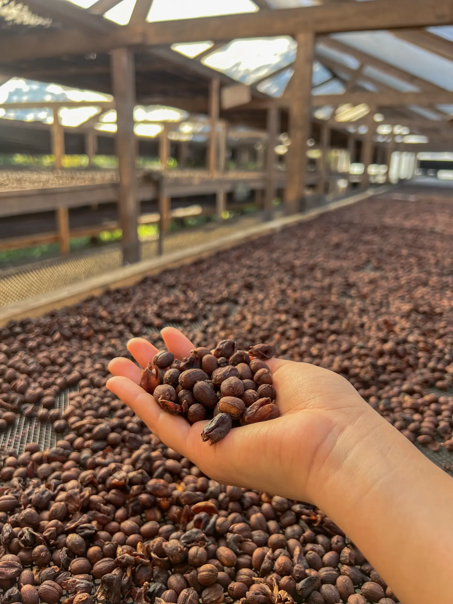
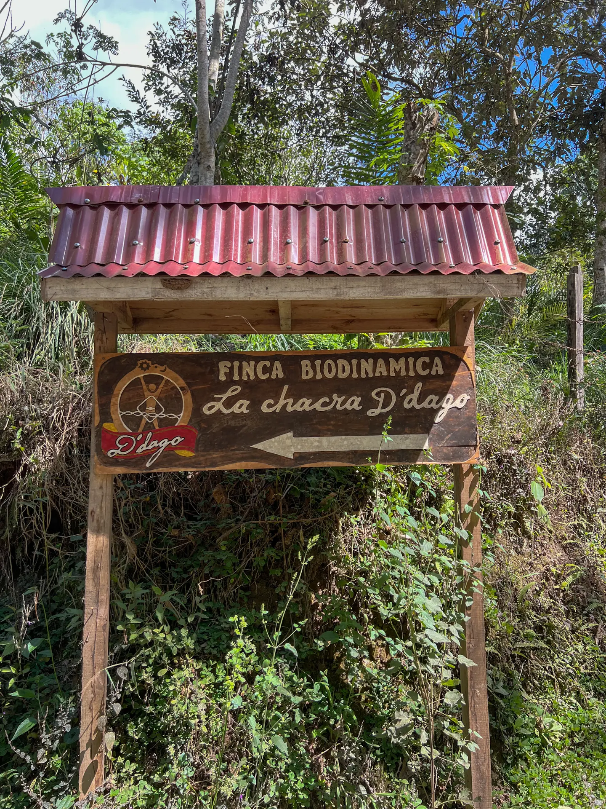

Pausa para recargar.
Café de especialidad, comida consciente y una comunidad que entiende que parar también es avanzar.
Ver Carta
NUESTRO ORIGEN: CAFÉ BIODINÁMICO

El ritual del café de especialidad bien hecho. Cultivado en La Chacra D'Dago, una finca familiar enfocada en la agricultura biodinámica. Un modelo regenerativo, guiado por el calendario lunar, que respeta la biodiversidad y beneficia tanto a la comunidad como al planeta.
- Puntaje SCA: 84.5
- Notas: Melaza, durazno, cítrico y miel
- Altura: 1550 - 1750 msnm
- Certificaciones: B Corporation, Demeter, USDA Organic
Lleva Kapulí Contigo
Parte de tu ecosistema diario.


Únete a la Comunidad Kapulí
El movimiento que elige. El punto de encuentro de la comunidad activa en Huaraz.

Running Club
Salidas grupales todos los domingos. ¡Todos los ritmos bienvenidos! Corre con nosotros por los senderos de Huaraz.
Eventos y Charlas
Proyecciones, charlas técnicas y café post-ruta. Aprende, comparte y disfruta de la cultura de montaña.
Celebra en Kapulí
¿Buscas un lugar único para tus eventos, talleres o reuniones? Kapulí Café te ofrece un ambiente cálido y equipado en el corazón de Huaraz.
EXPERIENCIA KAPULÍ